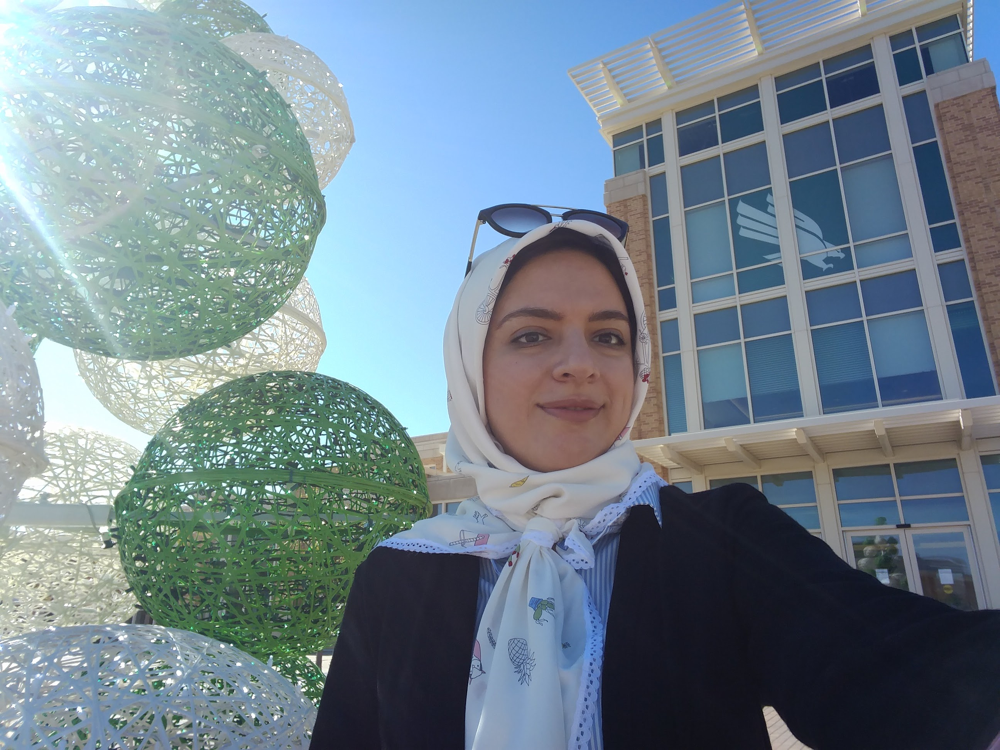

Zahra Sarabi
Department of Computer Science
University of North Texas
Denton, TX
Email: zahrasarabi [at] my [dot] unt [dot] edu

I'm Zahra Sarabi and currently I am a PhD candidate and a member of Human Intelligence and Language Technologies laboratory at the Computer Science department at University of North Texas, advised by Dr. Eduardo Blanco .
In my spare time I serve as Vice President of UNT Women in Computing. [Resume]
My research interests lie in the areas of Natural Language Processing and Machine Learning. I work to make computers understand and generate natural language better. I mainly work on Negation which is a complex phenomenon present in all human languages, allowing for the uniquely human capacities of denial, contradiction, and irony. In my research I am developing a system that can understand Negation in positive terms with applications ranging from machine translation to language inference.
Publications
- Zahra Sarabi and Eduardo Blanco.
2017.
If No Media Were Allowed inside the Venue, Was Anybody Allowed?
In Proceedings of the 15th Conference of the European Chapter of the Association for Computational Linguistics (EACL).
Valencia, Spain.
[bib,
pdf]
- Zahra Sarabi and Eduardo Blanco.
2017.
Understanding Negation in Positive Terms.
In proceedings of Women in MAchine Learning Workshop, Co-located with the Neural Information Processing Systems Conference (WiML).
Long Beach, CA, USA.
[Poster]
- Zahra Sarabi and Eduardo Blanco.
2016.
Understanding Negation in Positive Terms Using Syntactic Dependencies.
In Proceedings of the 2016 Conference on Empirical Methods in Natural Language Processing (EMNLP).
Austin, TX, USA.
[bib,
pdf]
- Eduardo Blanco and Zahra Sarabi.
2016.
Automatic Generation and Scoring of Positive Interpretations from Negated Statements.
In Proceeding of the 15th Annual Conference of the North American Chapter of the Association for Computational Linguistics (NAACL).
San Diego, CA, USA.
[bib,
pdf]
- Zahra Sarabi and Morteza Analoui.
2012.
A New DOP Model for Phrase-structure Parsing of Persian Sentences.
In Proceedings of the 10th Workshop on Asian Language Resources, pages 45–54, (COLING).
Mumbai, India.
[pdf]
- Zahra Sarabi and Mojgan Farhoodi.
2013.
ParsiPardaz: Persian Language Processing Toolkit.
In In Proceedings of The 3rd International Conference on Computer and Knowledge Engineering, (ICCKE).
Mashhad, Iran.
[pdf]
Past Work
Befor coming to UNT, I was working on Persian language processing. We designed and implemented an NLP Toolkit for Persian using JAVA (ParsiPardaz). This task was done as part of a larger project focused on designing a question answering system for the Persian language. The toolkit includes a Tokenizer, Lemmatizer, POS tagger and Dependency Parser. Results were published in [6]. An online version of ParsiPardaz toolkit is available: ParsiPardaz